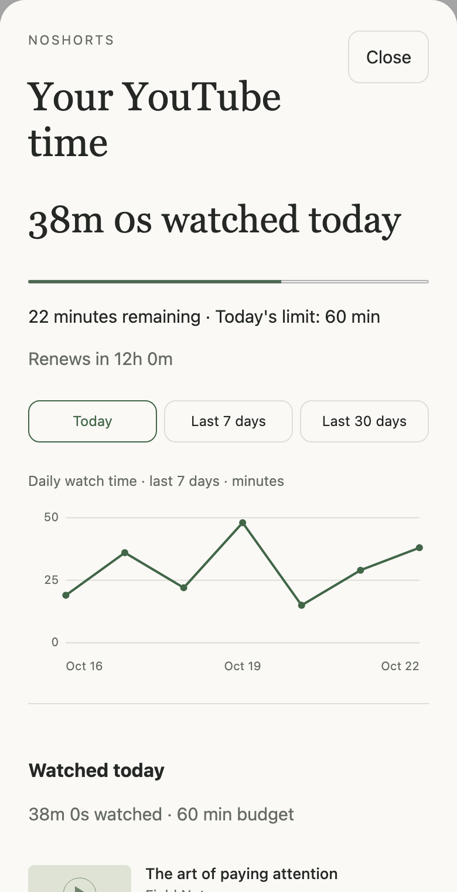

Each is independently installable. Use one, or install both for Shorts-free browsing with a daily budget.
02 / A glance, not a dashboard
Know where your time went.
A small timer while you watch. The details when you want them.
01
Quietly in the corner.
The faint timer sits inside the video, away from YouTube’s search button. Tap it to open your details.
02
Your day, in view.
Watched time, minutes remaining, and the hours until your allowance renews at local midnight.
03
A little perspective.
See daily totals on a line chart. Scroll your video history, with the most recently watched first.

Actual limiter interface · illustrative viewing history
03 / A limit that means something
Decide before you press play.
Choose 15 minutes, 30 minutes, an hour, two hours—or your own budget from 5 minutes to 4 hours.
Once you start watching, today’s limit is locked. Change your mind in settings, and the new limit starts tomorrow. At zero, playback pauses. You can still search, browse, and read comments.
No “add ten minutes.” No reset button. A fresh allowance at the next local midnight.
04 / A few minutes to get set up
Your iPhone. Your Safari. Your choice.
Runs on YouTube in Safari through the Userscripts extension. Desktop userscript managers work too.
Download your chosen script files into that folder. Keep the .user.js ending—send the files themselves, not text pasted into Notes.
03
Allow it in Safari.
In Settings → Apps → Safari → Extensions, enable Userscripts. Grant access to YouTube, then refresh your YouTube tab.
Only seeing your old script?
Check that the new file is in the folder selected in Userscripts. In Files, download it from iCloud if needed, and make sure its name doesn’t end in .txt.
Prefer a walkthrough?
Show the setup prompt
Help me install NoShorts on my iPhone using the Userscripts Safari extension. I want to choose between its Shorts blocker and daily watch-time limiter, or install both. Guide me through saving the .user.js files and enabling them on YouTube. Project: https://github.com/mithatakbulut/noshorts
A few good questions
Small tools. Clear boundaries.
Do I need both scripts?
No. The Shorts blocker removes Shorts. The time limiter manages normal video playback with a daily budget. Neither depends on the other.
Does this work inside the YouTube app?
No. Use YouTube in Safari on iPhone or iPad. On desktop, use a userscript manager with the supported GM storage APIs. See the desktop instructions.
What counts as watching?
Actual playback of normal videos on YouTube watch pages. Pausing, browsing, seeking, and buffering do not consume your budget. At 2× speed, a real minute still counts as one minute. Background playback counts while Safari continues running the script.
Where does my history go?
It stays in your userscript manager’s local storage. No viewing analytics or external account. History thumbnails load from YouTube. Data is not automatically shared across devices or browser profiles.
What should I know about iPhone Safari?
Native fullscreen can hide custom overlays. iOS may suspend the script in the background; long suspension gaps are discarded to avoid phantom watch time, which can undercount playback. Multiple tabs can briefly overshoot a budget. Real-device compatibility checks are ongoing.
Can I get around the limit?
This is a tool for your own intentions, not a tamper-proof lock. Changing settings after playback won’t extend today’s budget, but disabling the script, clearing storage, or changing your device clock can bypass it. Read the limitations.